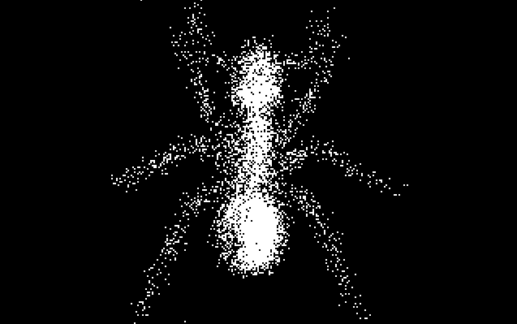
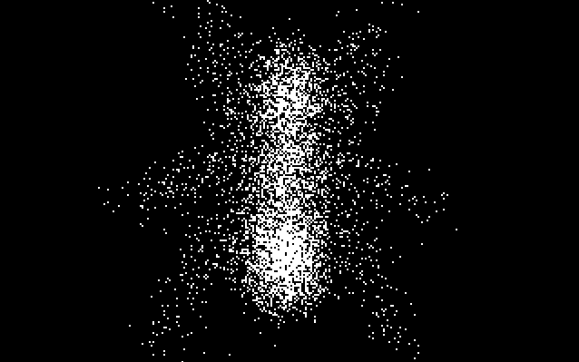

Rule file name:
Enter the name of the rule file (the extension of ".JC" is supplied automatically; you need not specify it). If there is a problem with your rulefunction you will get some error messages. Otherwise, after a brief delay you will see the second prompt:
Rule file filename.jc generated. Press Enter to continue:
When you press Enter the program will end. If you ran your program with Alt-R from inside Turbo, you must then use Alt-X to get out of Turbo. Answer y when Turbo asks you if you want to save your .PAS file.

Recapitulating, you might use the Turbo editor to write a program called MyLife.PAS. Then you might leave the editor and compile MyLife.PAS to a file called MyLife.EXE, which you run; alternately you might compile and run MyLife.PAS from within Turbo. When your "MyLife" program runs, it creates a permanent lookup table for MyLife called MyLife.JC. If you created and saved a MyLife.EXE file, you might as well erase it, because all MyLife.EXE does is generate the MyLife.JC file.
And what is a .JC
file good for? It is what our JC
simulator uses in order to run cellular automata at a good rapid
speed. The .JC file codes up a JCRule entry for each of
the 64K possible combinations of OldState and EightNeighborhood
that a cell might have. A .JC file will not however
normally take up 64K bytes of memory because a compression technique
is used.

The code supplied was developed with Turbo Pascal release 5.0. Unfortunately the Turbo format for units was changed between release 4.0 and release 5.0, so if you try to use our CaMake.TPU unit in Turbo Pascal release 4.0, it will not work. We have included the source code CaMake.PAS which we used to create CaMake.TPU. With a certain amount of hacking, it should be possible to convert CaMake into a usable unit or include file for other versions of Pascal.
To understand how to write a JCRule function, first we must consider the neighborhood of a cell, as seen by the function through its arguments. If the function is defined as:
FUNCTION JCRule(OldState,NW,N,NE,W,Self,
E,SW,S,SE:integer):integer;
BEGIN
...
END;
then the arguments represent the neighborhood as follows:
| NW | N | NE |
| W | Self | E |
| SW | S | SE |
Each of these arguments will be 1 if the low-order bit of the corresponding cell in the neighborhood is on, and 0 if it is off. In addition, the rule function may examine the argument OldState, which contains the full state of the center cell (eight bit planes). Thus, OldState ranges from 0 to 255, with the presence of low bit (also supplied in variable Self) signifying the state of Plane 0. The function defining the rule must examine these input variables, calculate the resulting state for the cell (from 0 to 255), and return that value. The following sample code, including the required declarations and main program, defines the game of Life, proceeding directly from Poundstone's description.
PROGRAM MyLife;
USES JCMake;
{$F+} { Needed so that function can be treated as an object. }
FUNCTION JCRule(OldState,NW,N,NE,W,Self,
E,SW,S,SE:integer):integer;
{We sum up the number of firing neighbor cells. If this
EightSum is anything other than 2 or 3, the cell gets
turned off. If the EightSum is 2, the cell stays in its
present state. If the Eightsum is 3, the cell gets turned
on.}
VAR
EightSum:integer;
BEGIN
EightSum := NW+N+NE+E+SE+S+SW+W;
CASE EightSum OF
0,1,4,5,6,7,8: JCRule:=0;
2: JCRule:=Self;
3: JCRule:=1;
END
END;
BEGIN {Main program}
GenRule(JCRule);
END.
If you have Turbo Pascal 5.0 handy, you should try creating and running the MyLife.JC rule right now. Where do you get a file to start work on? One way is simply to type the text of MyLife.PAS in, using the Turbo editor or a word processor. An easier way is to copy one of our .PAS ruleprograms to a file called MyLife.PAS and then make a few changes to "MyLife.PAS" until it looks like the program above.
As it turns out, the Life.PAS program provided with CelLab is similar but not quite the same as MyLife. Our Life is actually the rule "LifeMem," which colors the cells differentially depending on their state in the last generation. But our Life.PAS is quite similar to what you want for MyLife.PAS, so you should copy Life.PAS onto MyLife.Pas and use that as the starting point for your program.
So the steps for running MyLife are as follows: Use the DOS copy command to copy the existing Life.PAS file to a new MyLife.PAS file. Then use the Turbo editor to work on MyLife. Once you have MyLife in shape, compile and run it from within Turbo. If all goes well, MyLife creates MyLife.JC. You leave Turbo, enter JC, and run MyLife.
Starting from the DOS prompt, the keystrokes are:
(Copy life.pas and enter turbo)
copy life.pas mylife.pas Enter
turbo mylife Enter
(Edit the file and then press)
Alt-R Enter
(Answer the first prompt)
mylife Enter
(Answer the second prompt)
Enter
Alt-X
(Answer the save? prompt)
y
(Try the new rule)
ca Enter
l
mylife Enter
F1
Enter
Since the rule for the game of Life doesn't use the bit-planes #1 through #7 at all, the MyLife ruleprogram contains no reference to OldState. Rules which use the higher bit-planes may also be specified straightforwardly by Pascal rule definition functions. For example, here is the definition of Brian's Brain, a rule developed by Brian Silverman and described in [Margolus&Toffoli87], p. 47, as:
The rule involves cells having three states, 0 ("ready") 1 ("firing") and 2 ("refractory"). A ready cell will fire when exactly two of its eight neighbors are firing; after firing it will go into a refractory state, where it is insensitive to stimuli, and finally it will go back to the ready state.
This translates directly into a Pascal program as follows:
PROGRAM Brain;
USES JCMake;
{$F+}
FUNCTION JCRule(OldState, NW,N,NE,W,Self,
E,SW,S,SE:integer):integer;
{We use three states 0,1,and 2. 1 always goes to 2 and 2
always goes to 0. 0 goes to 1 iff there are 2 firing
neighbors.}
VAR
EightSum,NewState:integer;
BEGIN
{First get rid of any extraneous high state bits:
"3" decimal is "00000011" binary}
OldState:=OldState AND 3;
EightSum:=NW+N+NE+E+SE+S+SW+W;
IF OldState=0 THEN
IF EightSum=2 THEN NewState:=1 ELSE NewState:=0;
IF OldState=1 THEN JCRule:=2;
IF OldState=2 THEN JCRule:=0;
JCRule:=NewState;
END;
BEGIN {Main program}
GenRule(JCRule)
END.
It is possible to define much more complicated rules by using the high bits for various bookkeeping memory purposes. Here is an example of a JC that simulates thermally driven random diffusion. The theory of why the program works is explained in the Theory chapter.
PROGRAM Sublime;
{This rule implements the Margolus rule for simulating a gas
of cells diffusing. Particle number is conserved. We set
up a permanent lattice of position values that looks like
this:
0 1 0 1 ..
2 3 2 3 ..
0 1 0 1 ..
2 3 2 3 ..
: : : :
This lattice is alternately chunked into
A blocks: 0 1 and B blocks: 3 2
2 3 1 0
and the blocks are Noisily rotated one notch CW or one notch
CCW (short for ClockWise and CounterClockWise)}
USES JCmake;
{$F+}{ Required for function argument to genrule. }
FUNCTION JCRule(Oldstate, NW, N, NE, W, Self, E,
SW, S, SE:integer):integer;
{We use the eight bits of state as follows:
Bit #0 is used to show info to neighbors
Bit #1 is the gas bit
Bit #2 is fed by the system Noiseizer
Bit #3 stores the 4-cell consensus on direction;
0 is CCW, 1 is CW
Bits #4 & #5 hold a position number between 0 and 3
Bits #6 & #7 control the cycle}
VAR
Cycle,NewCycle,Position,Direction,NewDirection,Noise,Gas,
NewGas : integer;
BEGIN
Cycle:=(OldState SHR 6) AND 3;
Position:=(OldState SHR 4) AND 3;
Direction:=(OldState SHR 3) AND 1;
Noise:=(OldState SHR 2) AND 1;
Gas:=(OldState SHR 1)AND 1;
NewCycle:=(Cycle+1)MOD 4;
IF (Cycle=0)OR(Cycle=2) THEN
BEGIN
IF Cycle=0 THEN
{In A block mode set direction to NW's}
CASE Position OF
0: NewDirection:=Self;
1: NewDirection:=W;
2: NewDirection:=N;
3: NewDirection:=NW;
END;
IF Cycle=2 THEN
{In B block mode set direction to NW's}
CASE Position OF
0: NewDirection:=NW;
1: NewDirection:=N;
2: NewDirection:=W;
3: NewDirection:=Self;
END;
JCRule:=(NewCycle SHL 6)OR(Position SHL 4)OR
(NewDirection SHL 3)OR(Gas SHL 1)OR Gas
END
ELSE
BEGIN
IF (Cycle=1) AND (Direction=0) THEN
{CCW rotation of an A block}
CASE Position OF
0: NewGas:=E;
1: NewGas:=S;
2: NewGas:=N;
3: NewGas:=W;
END;
IF (Cycle=1) AND (Direction=1) THEN
{CW rotation of an A block}
CASE Position OF
0: NewGas:=S;
1: NewGas:=W;
2: NewGas:=E;
3: NewGas:=N;
END;
IF (Cycle=3) AND (Direction=0) THEN
{CCW rotation of a B block}
CASE Position OF
0: NewGas:=W;
1: NewGas:=N;
2: NewGas:=S;
3: NewGas:=E;
END;
IF (Cycle=3) AND (Direction=1) THEN
{CW rotation of an A block}
CASE Position OF
0: NewGas:=N;
1: NewGas:=E;
2: NewGas:=W;
3: NewGas:=S;
END;
JCRule:=(NewCycle SHL 6)OR(Position SHL 4)OR
(Direction SHL 3)OR(NewGas SHL 1)OR Noise
END;
END;
BEGIN {Main program}
{Make sure wrap is on}
WorldType:=1;
{We set bit #2 to be Noiseized each update}
RandB:=2;
RandN:=1;
{We set a vertical pattern of alternate 0s and 1s in
bit 4 and a vertical pattern of alternate 0s and 1s in
bit 5. This produces a pattern that goes
0 1 0 1 ..
2 3 2 3 ..
0 1 0 1 ..
2 3 2 3 ..
: : : : }
TextHB:=4;
TextHN:=1;
TextVB:=5;
TextVN:=1;
{The Sublime.JCC colorpalette only shows bit 1}
PalReq:='Sublime';
{The starting Sublime pattern is some geometric objects}
PatReq:='Sublime';
GenRule(JCRule);
END.
For now don't worry about the intricacy of Sublime's definition of the JCRule procedure. Instead let's focus on the special commands in the Main part of the Sublime program, the part at the end. There are thirteen system-defined global variables that can be set here. To organize the discussion, I put these system variables into three groups: i) PalReq, PatReq, and OCodeReq, ii) RandB, RandN, TextHB, TextHN, TextVB, TextVN, RSeedB, RSeedN, RSeedP, and iii) WorldType.
In brief these global system variables serve the following functions:
If a rule requests a .JCC, .JCP, or .JCO file which is not in the current directory, then JC will show a warning message such as:
Cannot open pattern definition file Soot.jcp Press any key to continue:
After you press a key, JC will continue, leaving the previous colorpalette, pattern, or no own code evaluator in effect.
The RSeed variables allow you to start up a rule with random seed bits in some planes. If we only want some random bits for the startup, but don't want them to keep coming in later, we use the RSeed variables instead of the Rand variables.
RSeedB tells the system what plane to begin random seeding at, and RSeedN tells it how many planes to seed. In addition, the RSeedP variable allows you to specify the percentage of ones you want. (This is not possible for the Rand variables, which always seed at 50%.) RSeedP can be set to any value between 0 and 255. These settings correspond to a percentage of ones which goes from 0% to 50%. Thus a setting of 255 means 50% ones and 50% zeroes; while a setting of 128 means 25% ones and 75% zeroes. RSeedP works only if RSeedN is 1.
Thus if I set RSeedB to 2, RSeedN to 1, and RSeedP to 128, then plane #2 will be randomized at the start of my program by a pattern that is 25% ones, but it will not be randomized again.
The primary purpose of the Seed option is to make it possible to request a start pattern with randomness in some special planes without having to store the random information as part of the start pattern. Look at Soot or Dendrite for examples of this. The reason you don't want to have to store a .JCP files} file which has random bits in one of its planes is that then the file will be about 64K bytes in size, and will take up more disk space than you really want to give it. Because the Soot pattern gets its "random gas" from the RSeed variables, its .JCP file is only some 2K bytes instead of 64K.
When a rule is running, you can see what kinds of texture the rule requested by looking at the status line.
A special feature of the TextH and TextV textures is that you can't get rid of them through editing or changing patterns. The idea is that if your rule calls for these textures, then it needs them, so they are put back in every time you leave the editor or load a new pattern. The RSeed planes are rerandomized whenever you load a new pattern, but not when you leave the editor.
The most commonly used WorldType is 1, which means a two dimensional world with wrap turned on. It was actually unnecessary to set WorldType to 1 in the Sublime rule, because in the absence of any other request, WorldType always defaults to 1. To get a two dimensional world with the wrap turned off, you set WorldType to 0.
If you set WorldType to one of the values 3, 4, 5, 6, 8, or 9, your rule will act on a one-dimensional (1D) world. The one-dimensional rules run quite a bit faster than the two-dimensional rules.
The 1D rules work by first copying each line of the screen onto the line below it, and by then filling in the top line with a new line calculated according to JCRule. This produces a spacetime trail of the 1D rule, with earlier times appearing lower on the screen like geological strata.
Our simulator is built to suck in eight bits of neighborhood information. We allow it to get neighborhood information in several different ways. These ways correspond to possible values of WorldType as listed below:
| WorldType | Dimensionality | Wrap? | Neighbors | Bits |
|---|---|---|---|---|
| 0 | 2D | NoWrap | 8 | 1 |
| 1 | 2D | Wrap | 8 | 1 |
| 2 | 1D | NoWrap | 8 | 1 |
| 3 | 1D | Wrap | 8 | 1 |
| 4 | 1D | NoWrap | 4 | 2 |
| 5 | 1D | Wrap | 4 | 2 |
| 8 | 1D | NoWrap | 2 | 4 |
| 9 | 1D | Wrap | 2 | 4 |
| 10 | 2D | Wrap | 8 | Sum of 8 |
| 11 | 2D | Wrap | 4 | Sum of 4 |
| 12 | User | NoWrap | User | User |
| 13 | User | Wrap | User | User |
The order in which we feed variables to the procedure JCRule is very important. The actual names of the variables in the JCRule procedure don't really matter, as these names are local "dummy" variables. When we are in 2D mode, we stick to one set of names that are in fact meaningful. We write:
JCRule(OldState, NW, N, NE, W, Self, E, SW, S, SE)
When we are in one of the three 1D modes it is appropriate to call the neighbor variables something else. Different names are appropriate for the three different cases:
In WorldType 2 & 3 (eight one-bit neighbors) use:
JCRule(OldState, LLLL,LLL,LL,L, Self, R,RR,RRR,RRRR)
In WorldType 4 & 5 (four two-bit neighbors) use:
JCRule(OldState, LL1,LL0,L1,L0, Self, R1,R0,RR1,RR0)
In WorldType 8 & 9 (two four-bit neighbors) use:
JCRule(OldState, L3, L2, L1, L0, Self, R3, R2, R1, R0)
Each L and R variable is to be thought of as holding one bit, as diagrammed below.
| Eight Neighbors | |||||||||
|---|---|---|---|---|---|---|---|---|---|
| Bit 0 | LLLL | LLL | LL | L | Self | R | RR | RRR | RRRR |
| Four Neighbors | |||||
|---|---|---|---|---|---|
| Bit 1 | LL1 | L1 | R1 | RR1 | |
| Bit 0 | LL0 | L0 | Self | R0 | RR0 |
| Two Neighbors | |||
|---|---|---|---|
| Bit 3 | L3 | R3 | |
| Bit 2 | L2 | R2 | |
| Bit 1 | L1 | R1 | |
| Bit 0 | L0 | Self | R0 |
To give an example of a one-dimensional rule, I give the code for the rule Aurora.PAS below. Aurora uses two four-bit neighbors, so its JCRule definition takes the form
JCRule(OldState, L3, L2, L1, L0, Self, R3, R2, R1, R0)
Within the context of this rule there is no specific "L" variable, so we use the name "L" to stand for the four-bit combination of L3, L2, L1, and L0. That is, we set L to 8*L3 + 4*L2 + 2*L1 + L0 in order to stack the four binary bits L3, L2, L1, and L0 on top of each other to get a four-bit number. And we do the same thing for R. We also get a four-bit variable C for the cell's own state by ANDing OldState with 15. This gets the low four bits out of OldState because 15 in binary is 00001111, and ANDing any of the eight bits B in OldState with a 0 produces 0, while ANDing a bit B with a 1 produces B.
PROGRAM Aurora;
{A one dimensional rug rule with two neighbors, and 4 bits
of each neighbor visible. This is run as a sixteen state
rule, where:
NewC = (L + OldC + R) / 3 + 1. }
USES JCMake;
{$F+} { Required for function argument to genrule. }
FUNCTION JCRule(OldState,L3,L2,L1,L0,Self,
R3,R2,R1,R0:integer):integer;
VAR
L,C,R,Average:integer;
BEGIN
{ Develop 4 bit values of neighbors. }
L := 8*L3 + 4*L2 + 2*L1 + L0;
C := OldState AND 15;
R := 8*R3 + 4*R2 + 2*R1 + R0;
Average:=(L+C+R)DIV 3;
JCRule:=Average+1;
END;
BEGIN {Main}
WorldType := 9; { World type: 2 neighbor ring }
PalReq:='Aurora';
RSeedB:=0; { Randomize all four bits at start }
RSeedN:=4;
GenRule(JCRule);
END.
In the rule descriptions at the end of this chapter I give an example of a WorldType 5 rule (ShortPi) and an example of a WorldType 2 rule (Axons).
Choosing WorldType 10 or 11 causes JC to evaluate averaging rules. These rules were devised to allow generalizations of the Rug rule of RC. In both of these rules the screen is wrapped. WorldType 10 computes the sum of EveryCell's eight nearest neighbors, and WorldType 11 gets the sum of EveryCell's four nearest neighbors. Since WorldType 11 has less work to do it runs faster than WorldType 10, although both types run slower than do our standard two-dimensional rules.
In the averaging rules, the first argument passed to JCRule holds the low five bits of the EveryCell's old eightbit state, and the second argument passed to JCRule holds the sum of the EveryCell's neighbors. (Eight neighbors in WorldType 10, and 4 neighbors in WorldType 11.) This sum can take as many as eleven bits to write out, which is why we are only allowed to see five bits of EveryCell's old state. The limitation is that our rules use lookup tables whose entries are indexed by sixteen bit "situation" codes.
In WorldTypes 10 and 11, the variables other than the first one are simply placeholders, and have no functionality whatsoever. We simply label them with the letters a through h.
As an example of WorldType 10, here is a program called Heat. A Heat cell takes a straight average of its neighbor cells, except that if a cell has its low bit on, the cell's value is kept fixed. The idea is that this rule is to simulate the heat flow in a metal plate certain of whose locations are kept fixed at certain temperature values.
PROGRAM Heat;
{This is an eightcell averaging rule with zero increment.
Odd states are frozen states and even states generate even
states. One can reanimate the vacuum by pressing i 6 r
or i 5 r. }
USES JCmake;
{$F+}
FUNCTION JCRule(FiveBits,Sum,
a,b,c,d,e,f,g,h:integer):integer;
BEGIN {Function}
JCRule:=(Sum SHR 3) AND 254;
IF odd(FiveBits)THEN
IF FiveBits<16
THEN JCRule:=FiveBits
ELSE JCRule:=128+FiveBits;
END; {Function}
BEGIN {Main}
WorldType:=10;
GenRule(JCRule)
END. {Main}
WorldTypes 12 and 13 are for "own code rules." Type 12 has wrap turned off, with zero on the boundary; and Type 13 is the torus wrap mode. To run a rule of WorldType 12 or 13, one must have a predefined inner loop function. These inner loop functions have extension .JCO. They are discussed more fully later in this section.
The Rug rule below is an example of a rule of this type. I could have written a similar Rug rule using WorldType 10, but I wanted to have the wrap off. The JC Rug rule calls a function called Semi8.JCO which returns the eleven bit sum of the eight nearest neighbors, so we can use this function to define a rug rule.
PROGRAM Rug;
{This program runs an eightcell averaging rule of eight bits
per cell. We program it as a nowrap owncode WorldType 12
calling Semi8.JCO.}
USES JCmake;
{$F+}
FUNCTION JCRule(OCValue,
a,b,c,d,e,f,g,h,i:integer):integer;
BEGIN {Function}
JCRule:=((OCValue SHR 3)+1) AND 255;
END; {Function}
BEGIN {Main}
WorldType:=12;
OCodeReq:='Semi8';
GenRule(JCRule)
END. {Main}
The speed at which the simulator runs depends only on the WorldType you have chosen. It does not depend at all on the complexity of the Pascal rule you write or on the start pattern you select; it is completely constant. Thus, there is no special necessity to make the function that defines the rule efficient--it is executed only to create the rule definition file, then never used again. The paramount consideration in writing a rule is that it be clearly expressed so that you can come back to it later and still be able to tell what you were trying to do.
.PAS rule programs are provided for all the JC demos. A good way to start writing rules of your own is to copy one of our rules onto your own file FIRST.PAS. Then you can use Turbo to edit FIRST.PAS to your own purposes and use Alt-R to run it and generate your FIRST.JC file. If it happens that your rule either 1) fails to define a value of JCRule for some inputs or 2) defines a value of JCRule outside the range 0-255, then you will get an error message when the program tries to generate FIRST.JC. If this happens, change something in your program and try again.
